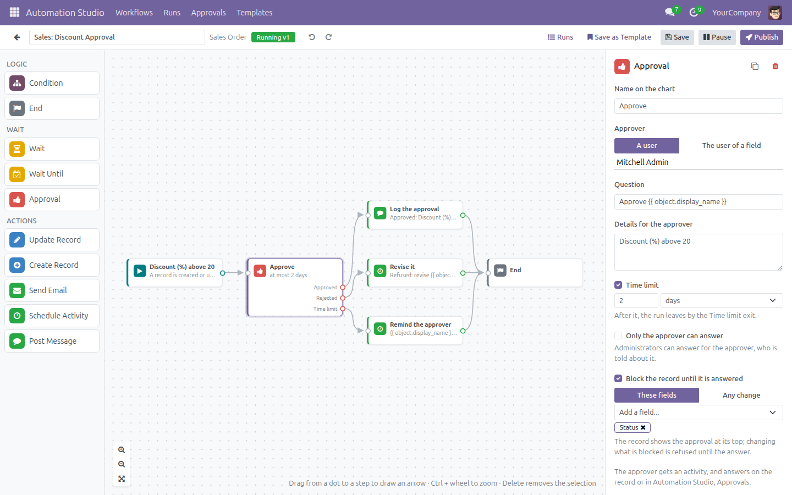
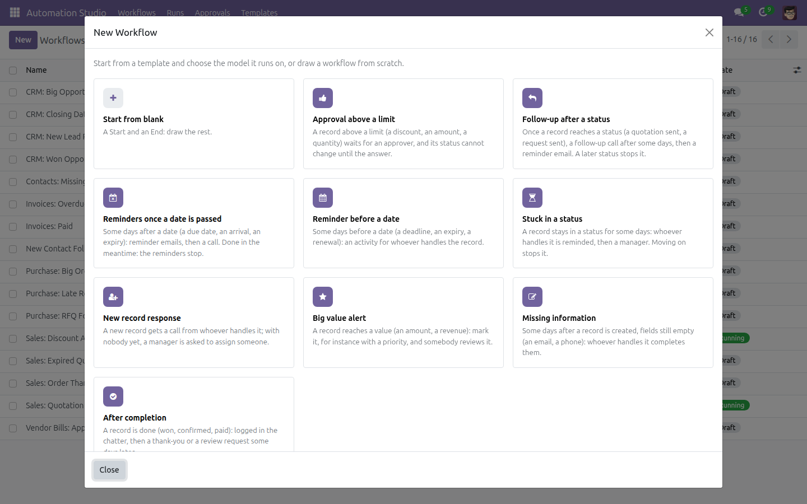
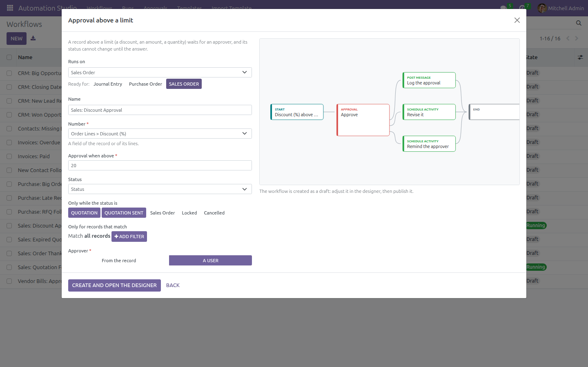
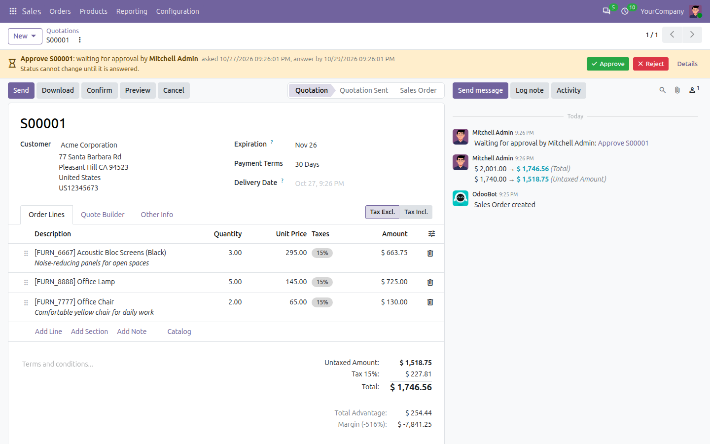
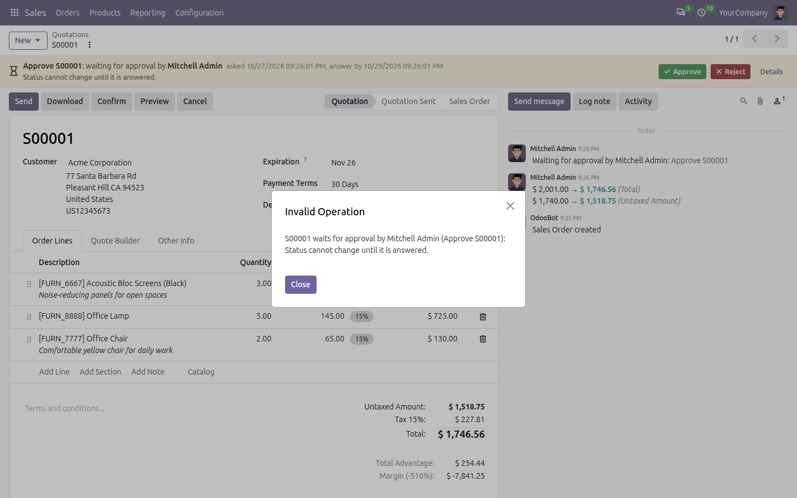
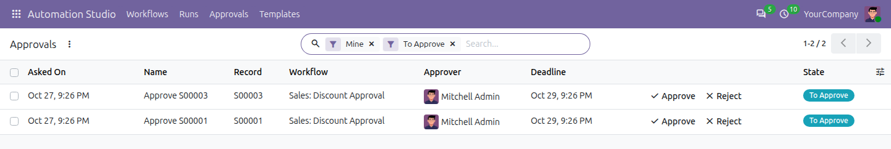
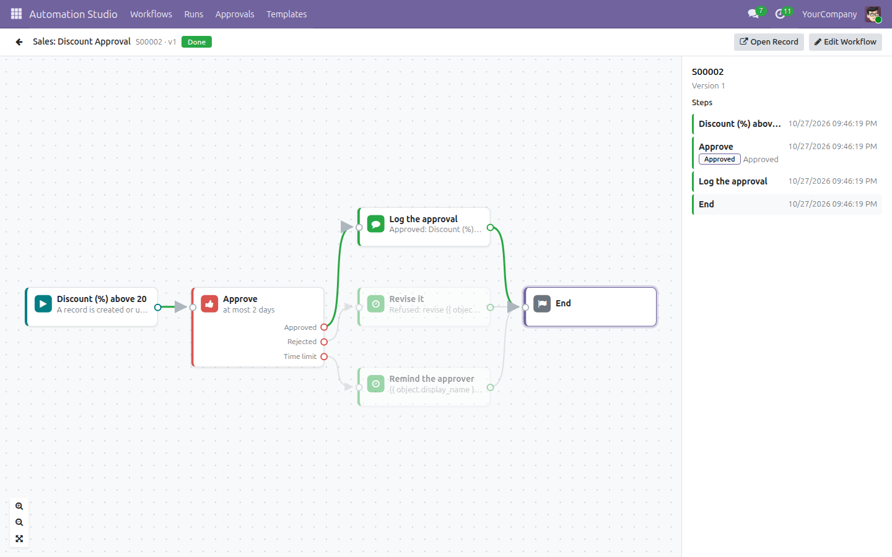
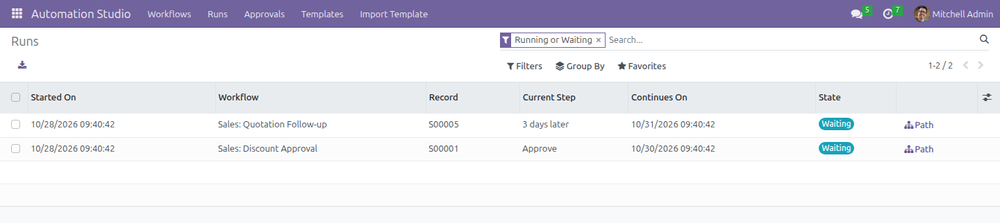

Also from Odoo Mates


Draw how your records move as a flowchart, and let Odoo run it: conditions, waits, approvals, emails, activities and record updates, on any app, without code.

The designer: the steps on the left, the chart in the middle, the settings of the selected step on the right. Here a discount above 20% waits for the sales manager, with a reminder after two days.
Drag the steps onto the chart, link them, set each one. A workflow runs on the records of one model: quotations, purchases, invoices, leads, contacts, tasks, or any model with a chatter.
New opens the templates. Pick one and the model it runs on: the fields are guessed, and quotations, purchases, invoices, vendor bills, leads and contacts come ready. The chart is drawn as you set it.


Approval above a limit, ready for Sales Orders: the discount of the lines, 20%, while a quotation.
A record waiting for an approval shows it at its top, with Approve and Reject for the approver, and the chatter notes the question and the answer. While it waits, its status cannot change: the quotation cannot be confirmed or sent. Choose the fields to block, or any change. A step can keep the answer to the approver alone.
Only a click is checked: Odoo itself, such as an online payment confirming an order, is never stopped.


Confirm is refused until the discount is approved. Lower the discount and the approval is withdrawn.

Every approver also finds their questions in Approvals, and as an activity.
Every record going through a workflow is a run: the step it is on, when it goes on, and each step it went through. Show it on the chart, open its record, cancel it, or retry the step that failed. A step that fails is rolled back alone: it never undoes the change that started the run.

The way S00002 went: approved, logged, done.

All the runs, with the step each record is on.
Save as Template keeps a workflow for your company, or for all of them, and it appears among the templates of New. Export a template as a file and import it into another database: users, activity types, email templates and the records the steps set are found again by their external id or their name, and what is missing is listed for you to choose again.
/opt/odoo/custom-addons, and add that folder to addons_path in odoo.conf.
No paid edition, no limits: the code is open (LGPL-3), and every feature is covered by automated tests. Your rating helps others find it; your requests decide what comes next.
★ Rate us on Odoo Apps 💡 Request a feature 🐛 Report an issue ★ Star us on GitHub 📝 How to contribute